Big Picture
Up to now, the course has mostly focused on concepts, models, and evaluation. This lecture turns to the environment where that work is often done in practice.
The lecture begins with Google Colab as a cloud notebook environment, then introduces the idea of a runtime, and finally gives an overview of specialized hardware such as GPUs and TPUs.
What Is Google Colab?
In one sentence: Google Colab is like Jupyter notebooks on the cloud.
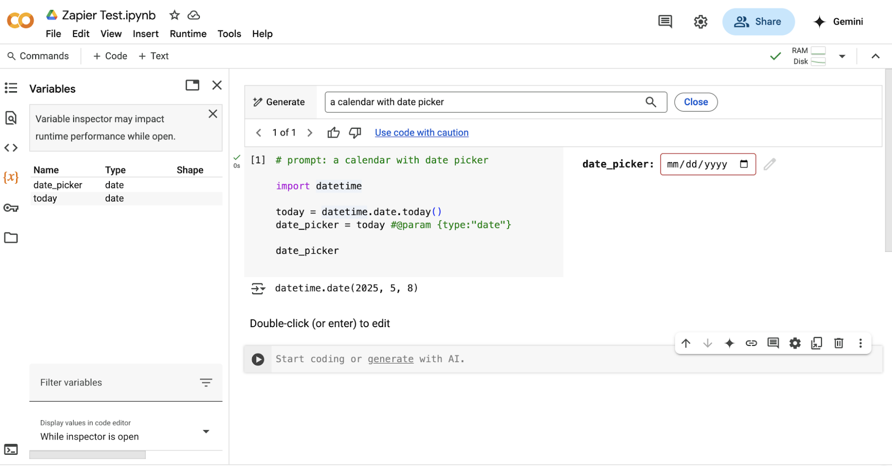
That means you still write code in cells, execute them interactively, and inspect outputs step by step. The difference is that the notebook does not have to run on your own laptop.
How to Get Started on Colab
The lecture presents two ways to begin: the fastest one, and the proper one.
- create a new Python notebook
- start coding immediately
- most common data-science libraries are already installed
- open or create the notebook in the cloud
- save a copy in your own Google Drive
- work from that saved copy so changes persist
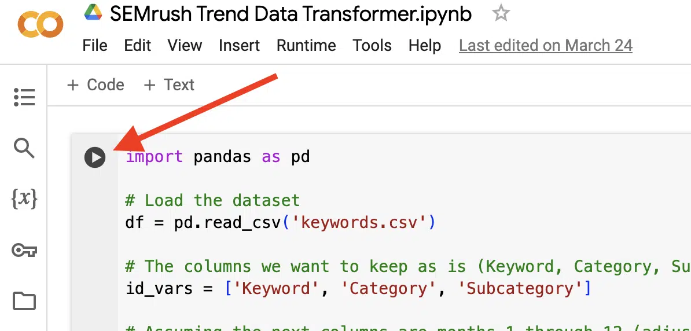
Why Colab Feels Familiar
Colab’s interface is intentionally close to Jupyter, but it also inherits sharing and collaboration features from Google Drive.
Like Jupyter
Code cells, outputs, notebooks, interactive experimentation, and a workflow that feels natural for data science.
Like Google Drive
Sharing, collaborative editing, cloud storage, and a smoother path for accessing notebooks from different places.
The Colab Runtime
When you open a Colab notebook, you are not only opening a file — you are also connecting to a runtime.
The runtime is the remote machine that actually executes your code. In the lecture, it is described as a Google virtual machine temporarily dedicated to you.
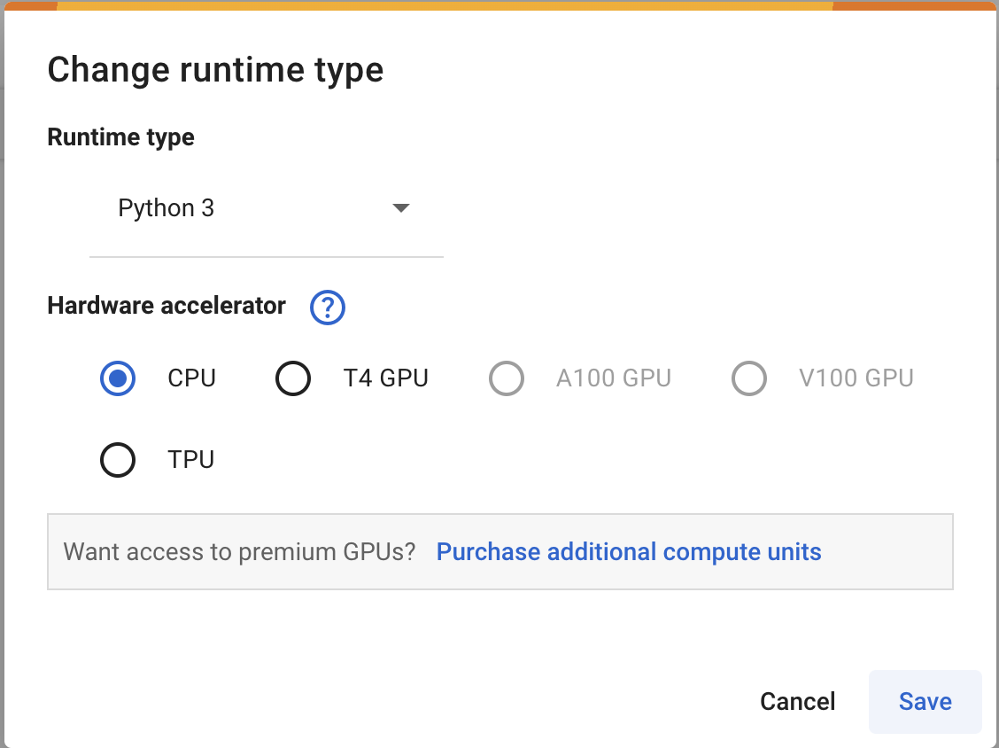
Changing Runtime Type
By default, Colab starts with a CPU runtime. But you can switch to a GPU or TPU runtime through the notebook settings.
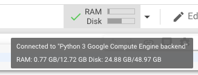
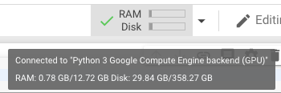
This is an important practical step because many deep-learning or heavy numerical workloads benefit significantly from the right accelerator.
CPU, GPU and TPU
Colab can provide different kinds of runtimes, and each one corresponds to a different hardware setup.
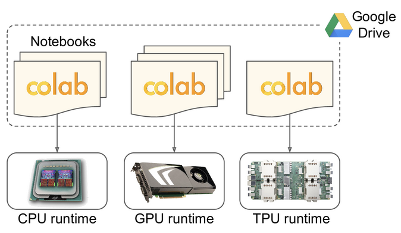
| Runtime | Typical Use |
|---|---|
| CPU | General notebook work, lighter computation, standard Python workflows |
| GPU | Parallel numerical workloads, deep learning, matrix-heavy operations |
| TPU | Specialized tensor operations and large neural-network workloads |
A First GPU Example
One practical trick shown in the slides is to check the assigned GPU from inside the notebook.
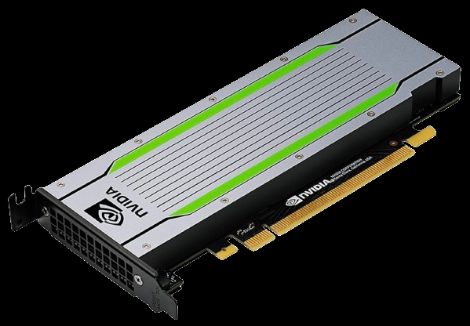
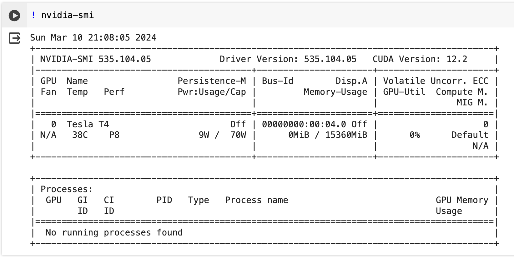
nvidia-smiRuntime Lifetime and Limits
Colab is convenient, but it is not meant for unlimited unattended computation.
The web interface may disconnect after about 30 minutes of unattended use.
Even with active use, a runtime may shut down after about 12 hours.
This is why the lecture stresses good habits: save what matters, store notebooks in Drive, and do not treat the runtime like a permanent machine.
Why TPU Exists
The TPU appears here as additional material, but it is an important example of specialized hardware created specifically for machine learning.
Google’s growing demand for deep-learning inference pushed them beyond generic compute solutions. The idea was to improve cost-performance dramatically compared with relying only on GPUs.
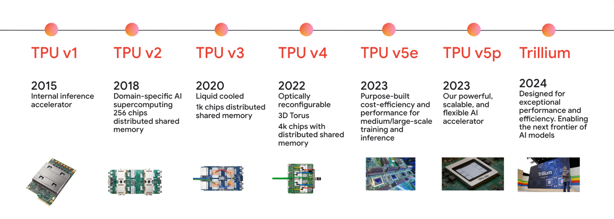
TPU Evolution
The lecture uses a sequence of slides to show how TPU generations evolved from inference-oriented hardware toward more capable systems for both training and inference.
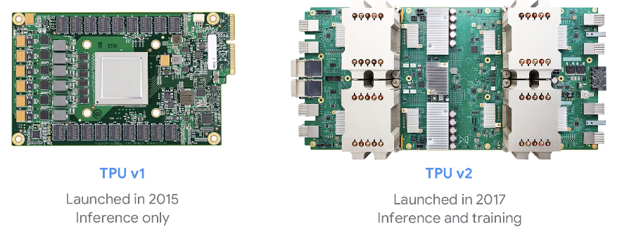
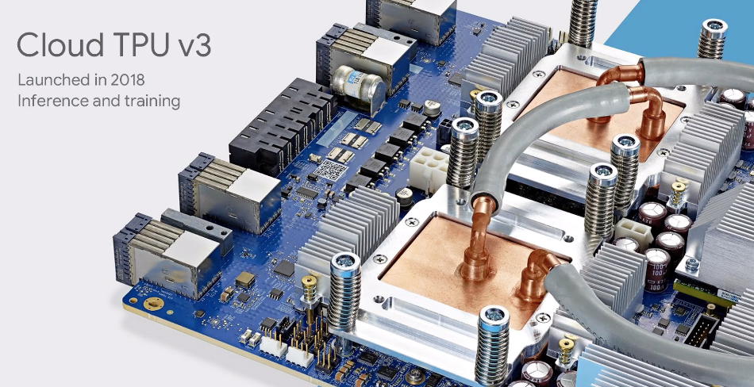
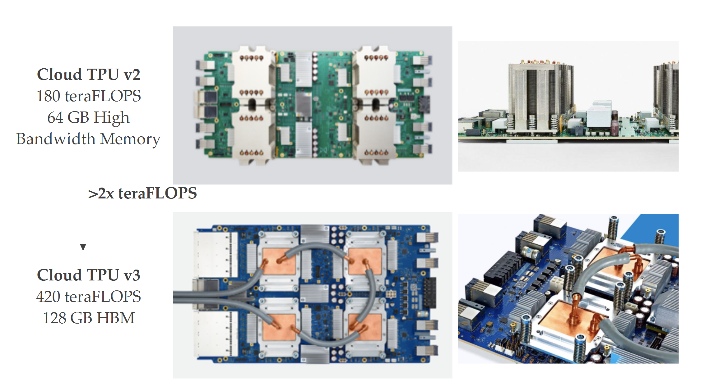
TPU Pods and Scaling Out
A single accelerator is not the end of the story. The lecture also shows how TPUs can be interconnected into pods for much larger-scale computation.
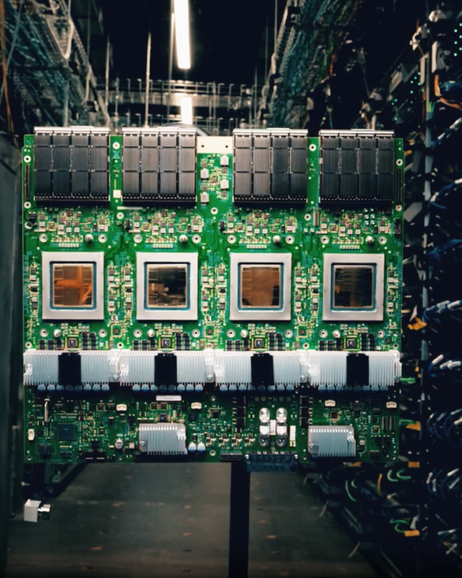

For the course, this is more contextual than operational. The key lesson is that ML infrastructure is designed not only around algorithms, but also around scaling those algorithms efficiently.
A Practical Caution: GPU vs TPU
Seeing one runtime look slower than another in a quick test does not automatically mean the hardware is worse.
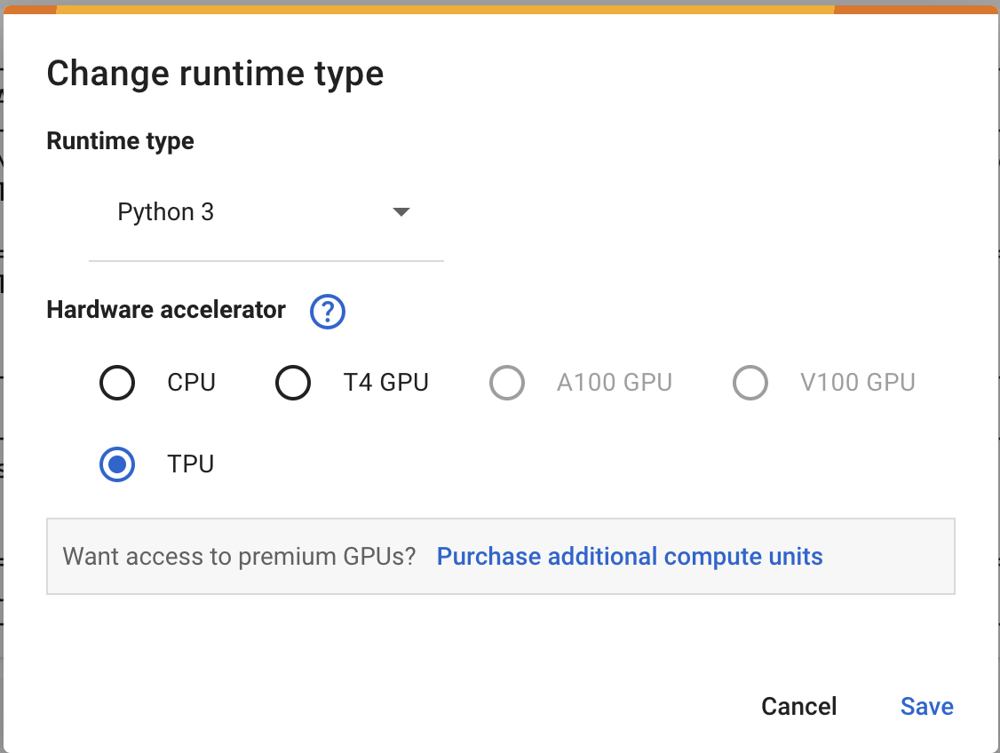
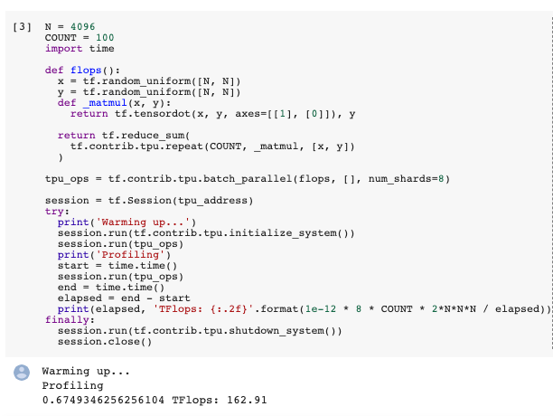
Study Material
Use the slide deck for the Colab interface walkthrough, runtime selection screenshots, GPU example, and TPU overview.
View PDF →Use the transcript for the practical comments on cloud notebooks, runtime behavior, and the mindset needed when working with remote compute resources.
View PDF →Quick Review Quiz
1. What is Google Colab in one sentence?
It is essentially a cloud-based version of Jupyter notebooks, integrated with Google services.
2. Why is it a good habit to save a copy of a notebook in your own Google Drive?
Because Colab is cloud-based and temporary, so saving your own copy helps preserve your work and future changes.
3. What is a Colab runtime?
It is the remote virtual machine that actually executes the code in your notebook.
4. What is the default Colab runtime type?
By default, Colab starts with a CPU-only runtime.
5. What command is commonly used to check GPU information inside a Colab notebook?
The command nvidia-smi is commonly used to inspect GPU details.
6. What happens after a long unattended Colab session?
The runtime may disconnect after about 30 minutes of unattended use.
7. Even with active use, about how long can a Colab runtime last before shutting down?
It may shut down after roughly 12 hours even if you stay connected and keep working.
8. Why was Google motivated to develop TPUs?
Because machine-learning workloads were growing so much that Google needed a more efficient specialized hardware solution for deep learning.
9. What is the difference between a casual test and a benchmark?
A casual test may give misleading impressions, while benchmarking or profiling is designed to measure hardware performance in a more meaningful and controlled way.
10. Why is Colab especially useful for students and experimentation?
Because it offers easy cloud-based notebooks and access to accelerators like GPUs and TPUs without requiring local setup or specialized hardware.